Synergy Gradebooks
Synergy is the official gradebook of record for Cobb County Schools. Teachers are responsible for maintaining an accurate and up-to-date gradebook, entering grades in the CTLS Grading Center within 48 hours of submission, marking missing assignments, and correcting errors when identified.
Big Idea: Synergy Gradebook updates as you enter new scores in CTLS via a nightly sync. What students and families see in ParentVUE and StudentVUE is the grade that will be reported at the end of each term.
How CTLS and Synergy Work Together
After updating Synergy Settings for assignments, grades sync from CTLS to Synergy each night. Direct students to CTLS My Grades for assignment-by-assignment progress and feedback. Always point them to StudentVUE for their true overall average — that is what goes to the report card and transcript.
CTLS My Grades
Assignment-by-assignment progress and feedback. Use for day-to-day monitoring.
Synergy / StudentVUE
The official overall average and gradebook of record. This is what goes to ParentVUE, StudentVUE, the report card, and transcript.
Nightly Sync
Grades entered in the CTLS Grading Center appear in Synergy after the overnight sync. Wait up to 24 hours before checking Synergy for updated scores.
Gradebook Setup
Complete each section below before syncing grades. Assignment Types and Weights must be configured first — the 24-hour sync process cannot begin until setup is complete.
Assignment Types
If new Assignment Types are needed, teachers can add them on the Assignment Types screen. Returning teachers should review existing types to decide if they will be used for the current term. Assignment Types must match the Grading Categories in CTLS. Use the the Class Schedule or CVA Course Syllabus as the quickest reference.
Click Assignment Types
Click the Assignment Types sub-menu in Synergy. Returning teachers should review existing types to decide if they will be used for the current term.
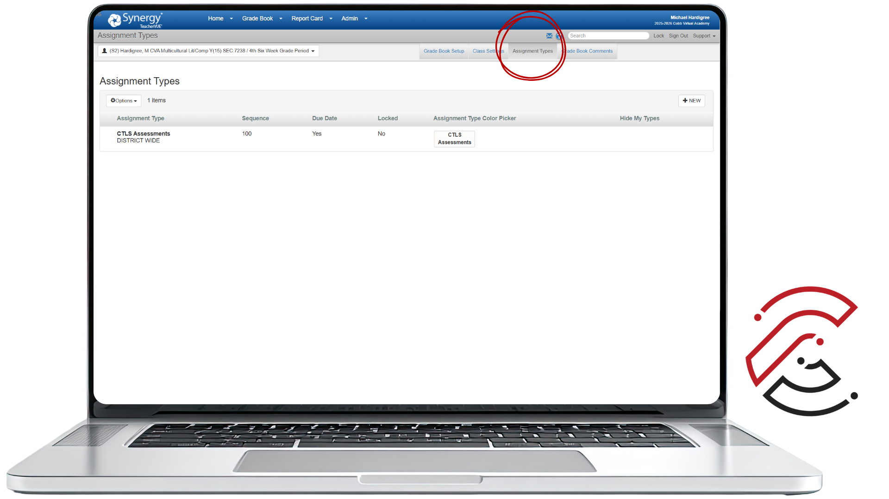
Click New
Click the New button in the navigation ribbon to begin adding a new Assignment Type.
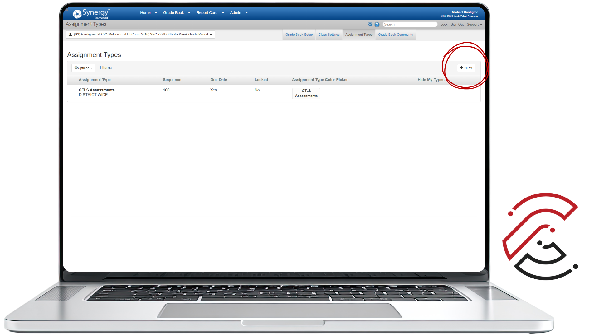
Enter the Assignment Details
Enter the Name, Sequence, toggle Due Date to Yes, and select a custom color. Include the prefix CVA in front of every Assignment Type name.
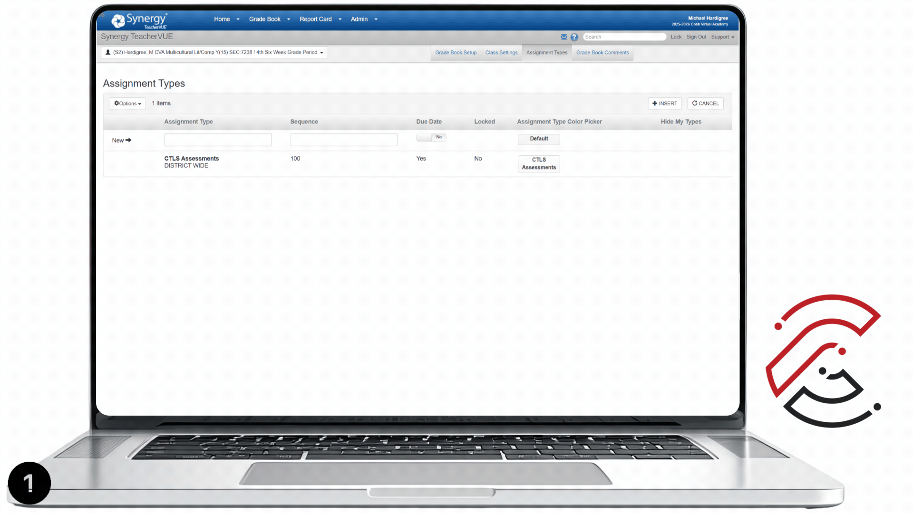
Click Insert
Click Insert when all options are set. Repeat the process for additional Assignment Types. To correct a mistake, click Edit, make your changes, then click Save.
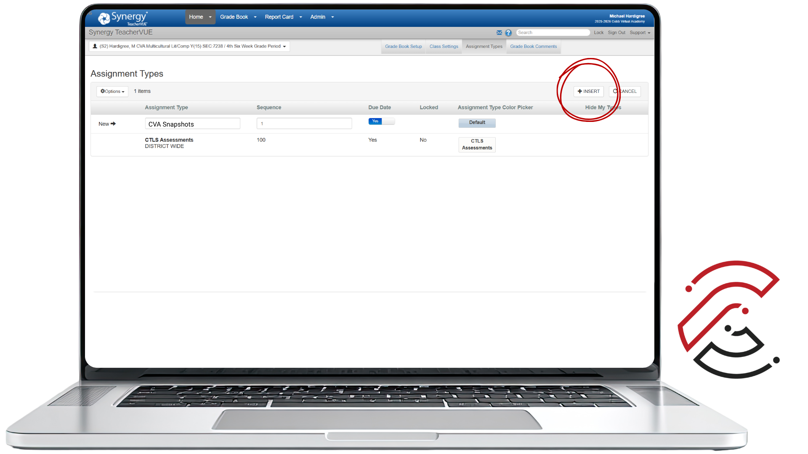
View Assignment Types
Make sure your Assignment Types match the Grading Categories in CTLS. The CVA Course Syllabus is the quickest reference for Assignment Categories and Weights.

Edit Assignment Types, If Needed
If you notice a mistake in the Assignment Types, click Edit to view all editable rows and details. Once you have updated the information, click Save.
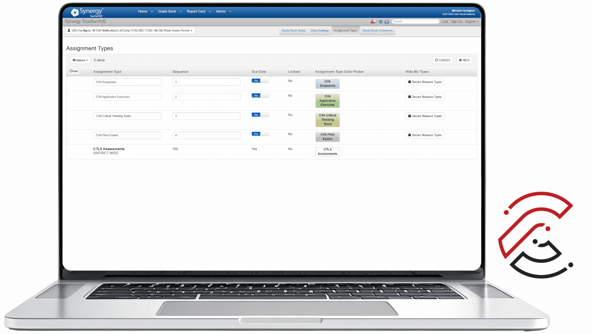
Assignment Type Weights
Assignment Type Weights ensure the grading system reflects the importance of each assignment type. All classes require Weights to be added early in the term. They are not automatically assigned and can only be set by the classroom teacher.
Set up weights before syncing. A synchronization process between Synergy and CTLS takes 24 hours before you can attach Synergy Settings in CTLS.
- Weights in the class must total 100%.
- Do not delete or adjust Assignment Type Weights once set. If a type is no longer needed, leave the weight at zero. Contact CVA Teacher Support immediately for any errors because changes to weights can affect calculations in previous grading periods.
Click Grade Book Setup
After adding Assignment Types, click the Grade Book Setup tab in Synergy.
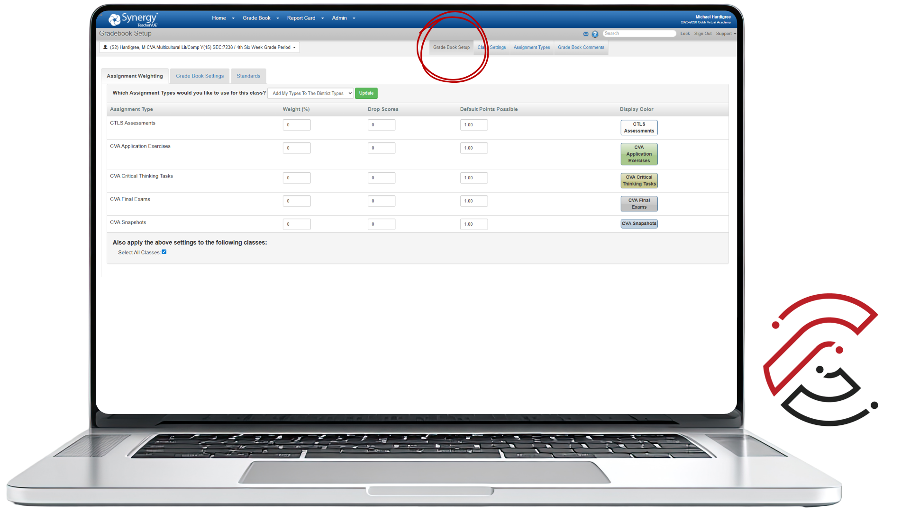
Click Assignment Weighting Tab
Select the Assignment Weighting tab to apply category weights.
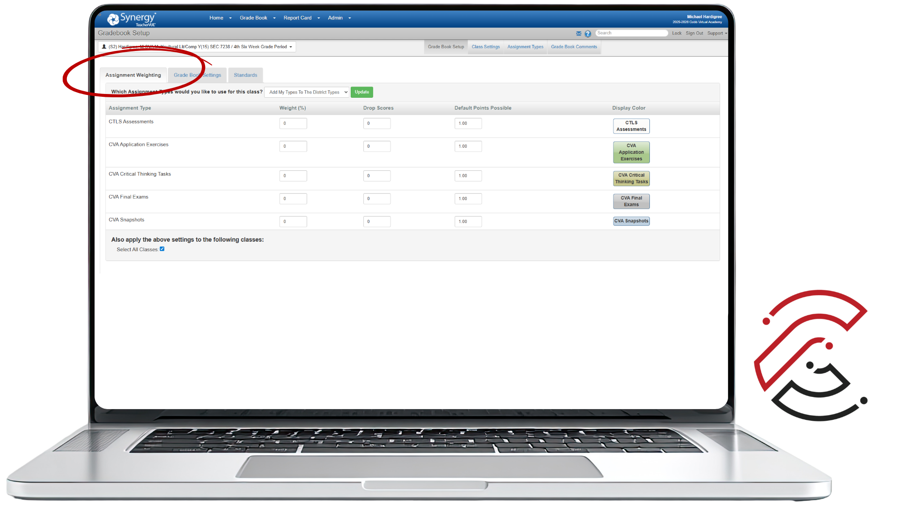
Assign Weights
Enter the Weights for each Assignment Type. Consult the CVA Course Syllabus for correct values. Weights must total 100% for each class.

Select Dropdown & Check Classes
From the dropdown, select Add My Types to District Types. Then find your CVA courses and check the box to apply settings to those classes.

Click Update
Be sure to click Update. Without clicking Update, your Assignment Weighting details will not be saved to your Synergy Gradebook.
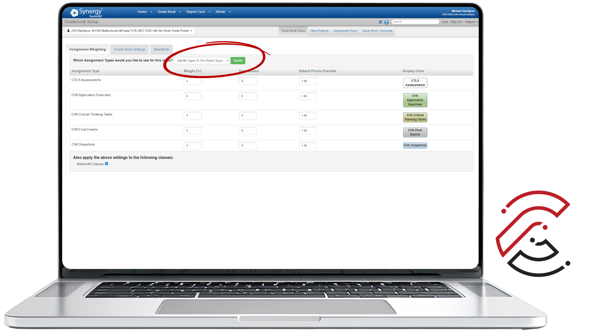
Gradebook and Class Settings
Before syncing grades, take a moment to check your Synergy Gradebook Settings. The way your gradebook is configured (marking period, assignment types/weights, and how zeros or missing work are handled) can impact student averages. A quick settings check now prevents grade discrepancies later.
Teacher Type Defaults
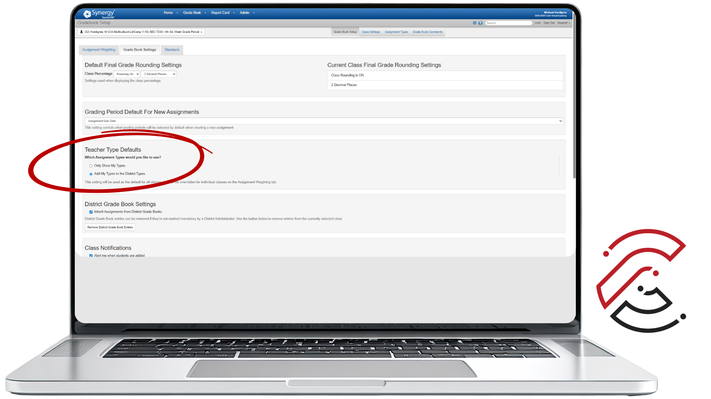
In Teacher Type Defaults, select Add My Types to the District Types.
Grading Period
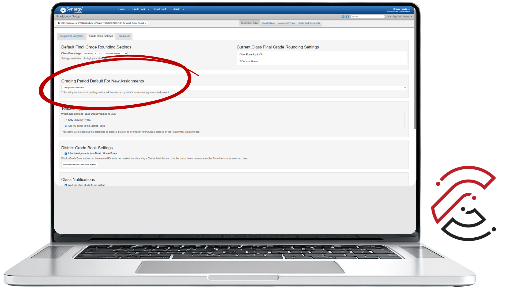
In Grading Period Default For New Assignments, select Assignment Due Date. This ensures grades calculate correctly and in the correct grading period.
Grade Rounding
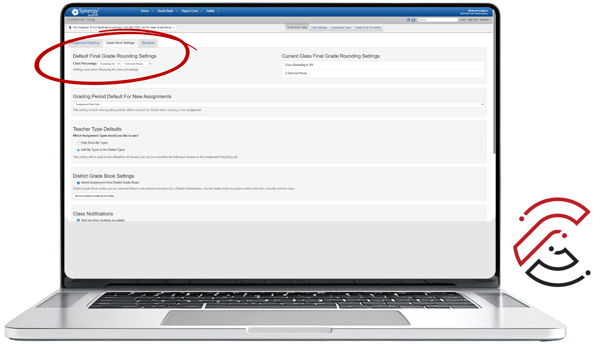
In Default Final Grade Rounding Settings, set Class Percentage to Rounding On and 2 Decimal Places. Click Edit, adjust the setting, then Save.
Class Settings
Class Settings in Synergy are the controls that determine how your gradebook works for a specific class — how grades calculate and how scores are handled. Most settings have already been pre-determined by CCSD, so there is nothing you need to do as a teacher.
One Class Setting that varies from school to school is Percentage Rounding. CVA rounds using 2 Decimal Places, so you might need to adjust the setting. Start by clicking Edit. Then, you can either toggle on/off for Rounding and select 2 Decimal Places. Finally, click Save.
Syncing CTLS Grading Categories and Synergy
Feedback and grading happen in the CTLS Grading Center. You must sync Assignment Synergy Settings in CTLS to allow grades to flow to your Synergy Gradebook. Follow these steps for every assignment you grade.
Select the Term
In the Assignment Synergy Settings panel, select the Term — Fall is S1, Spring is S2.
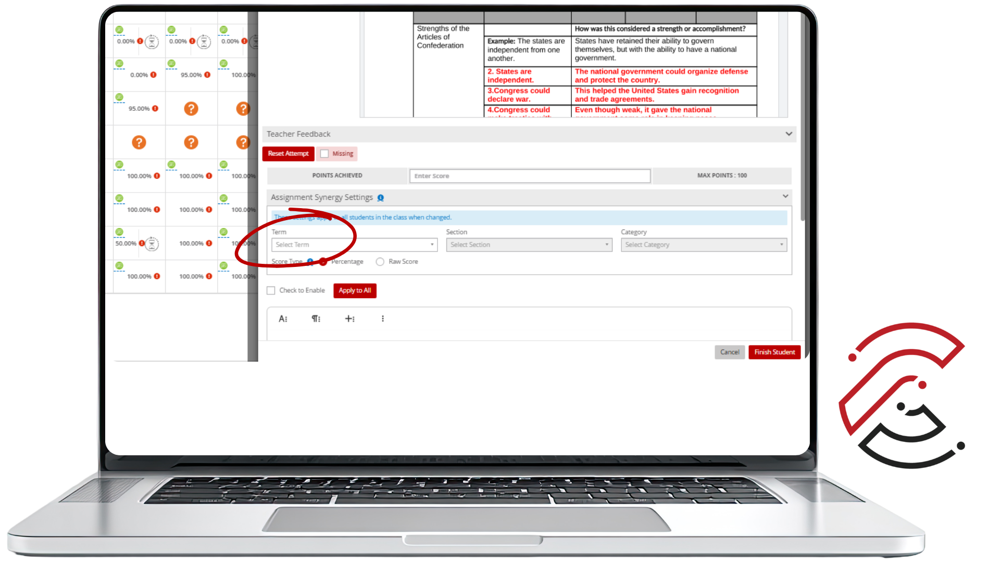
Select Your CVA Section
Select your CVA Section. You can find this number on the Classroom Profile page in CTLS.
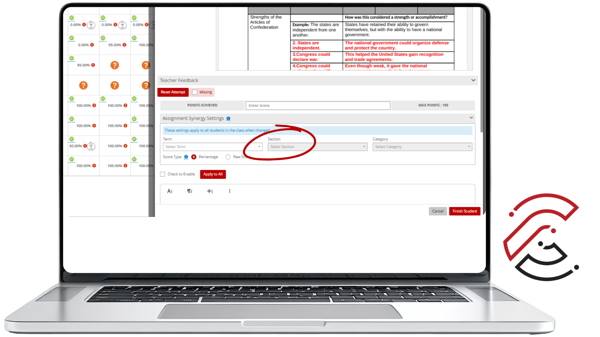
Select the Synergy Category
Select the correct Synergy Category. It matches the category name shown beneath the assignment title in the CTLS Grading Center.
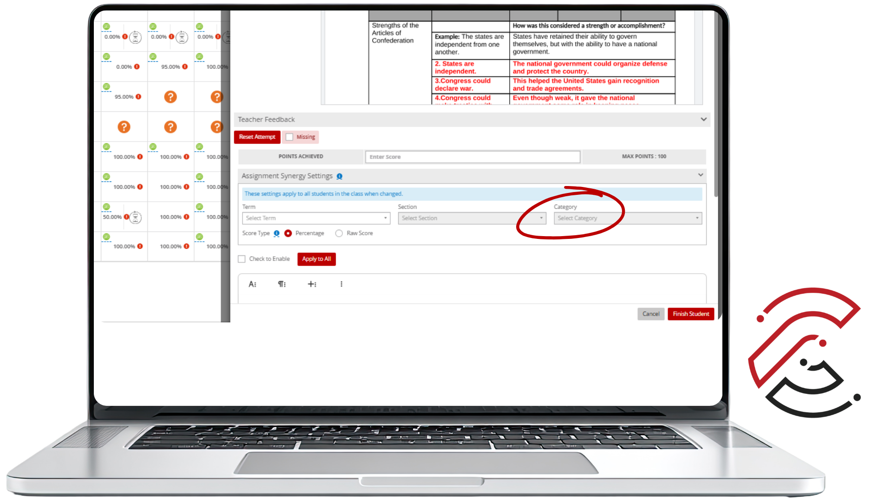
Select Score Type
Select either Percentage or Raw Score for the Score Type. In simple terms: points are the score; percentage is the score converted to a percent.
Click Check to Enable
Check the box next to Check to Enable to activate the Synergy sync for this assignment.
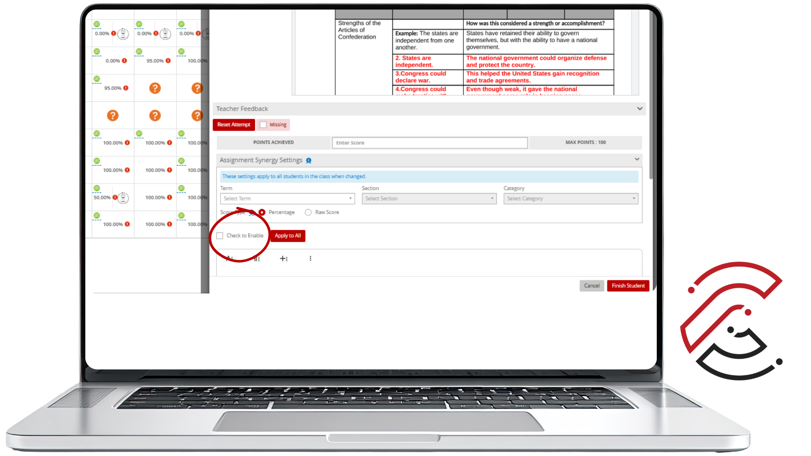
Click Apply to All
Click Apply to All to apply the Synergy settings to all students in the class.
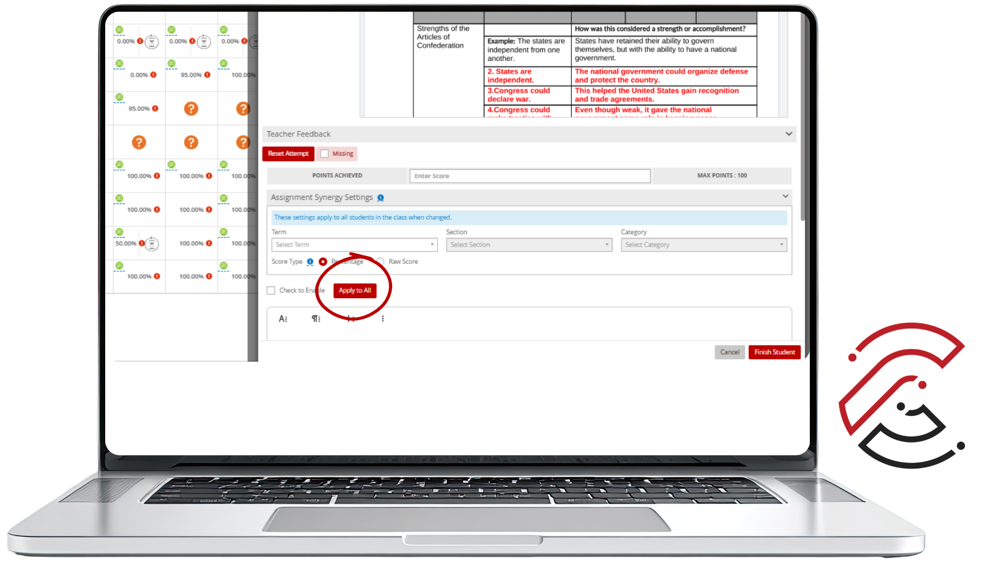
Click Finish Student
After grading and entering feedback, click Finish Student. The CTLS Gradebook syncs to Synergy nightly — wait 24 hours for grades to appear in Synergy.
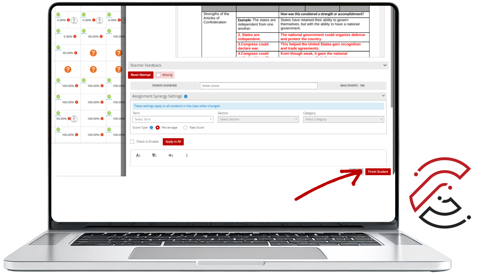
Checking Course Averages
During th week, as part of your Weekly Routine, take a moment to verify that assignment scores and overall averages align between CTLS and Synergy. They may not always match exactly — especially if an assignment is missing or hasn't synced yet — but consistent discrepancies need attention.
Do the grades match? Take a moment to review your gradebooks in both CTLS and Synergy. Do the assignment scores match, and do the overall averages for all students in Synergy match the averages shown in CTLS? If yes — you're all set. If no — see the Troubleshooting section below for common fixes.
Troubleshooting 101
Common fixes for errors in your Synergy gradebook. Click a question to expand the answer.
Why can't I see all of the assignments/grades in Synergy?
Why does the student have an empty box in the Synergy gradebook?
How can I check categories in CTLS and Synergy?
Who do I contact if I entered the wrong category in CTLS?
Why are the averages different in CTLS and Synergy?
Why doesn't the Synergy average on the right (Unit, Date, Week, Category) match the overall average on the left?
When the left and right columns don't match in Synergy, it is usually a straightforward fix involving Grading Periods:
- 1Open your Synergy Gradebook.
- 2Click Gradebook at the top, then navigate to Assignments.
- 3Open the Grading Periods tab.
- 4Look for 6th Six Week Grade Period and check All.
- 5Click Save Grading Periods.
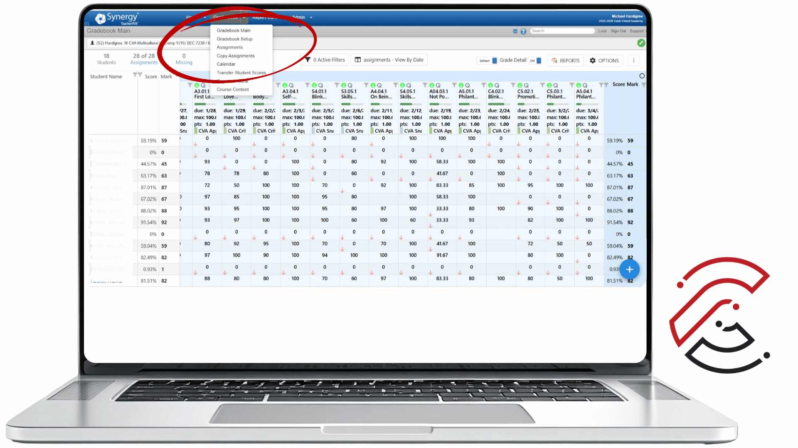
Why are the weights blank in Assignment Weighting?
How do I assign different Rounding Percentages to my classes?
What to Remember
Synergy is the gradebook of record. What students and families see in ParentVUE/StudentVUE is what goes on the report card and transcript.
Set up Assignment Type Weights before syncing. Weights must total 100% and cannot be easily changed mid-term without affecting previous grading periods.
Allow 24 hours for the nightly sync. Grades entered in CTLS take up to one day to appear in Synergy.
Always click Finish Student after grading and entering feedback in CTLS — this is what triggers the sync.
Verify that averages match in both CTLS and Synergy. If they don't, check the Troubleshooting section or contact CVA Teacher Support.
Contact CVA Teacher Support immediately if you notice persistent grade discrepancies or if you entered the wrong category. Include the assignment name and course section.
Have Questions?
CVA Teacher Support can help with gradebook setup, syncing issues, category errors, and anything else related to Synergy. When reaching out, include the assignment name and course section for the fastest resolution.